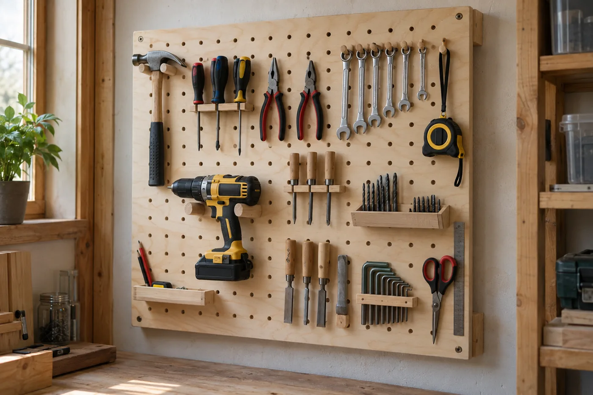
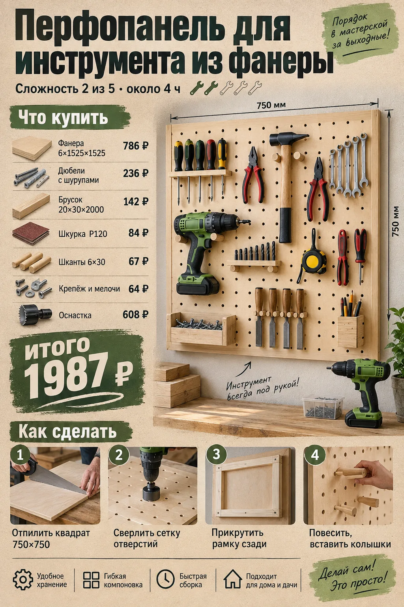
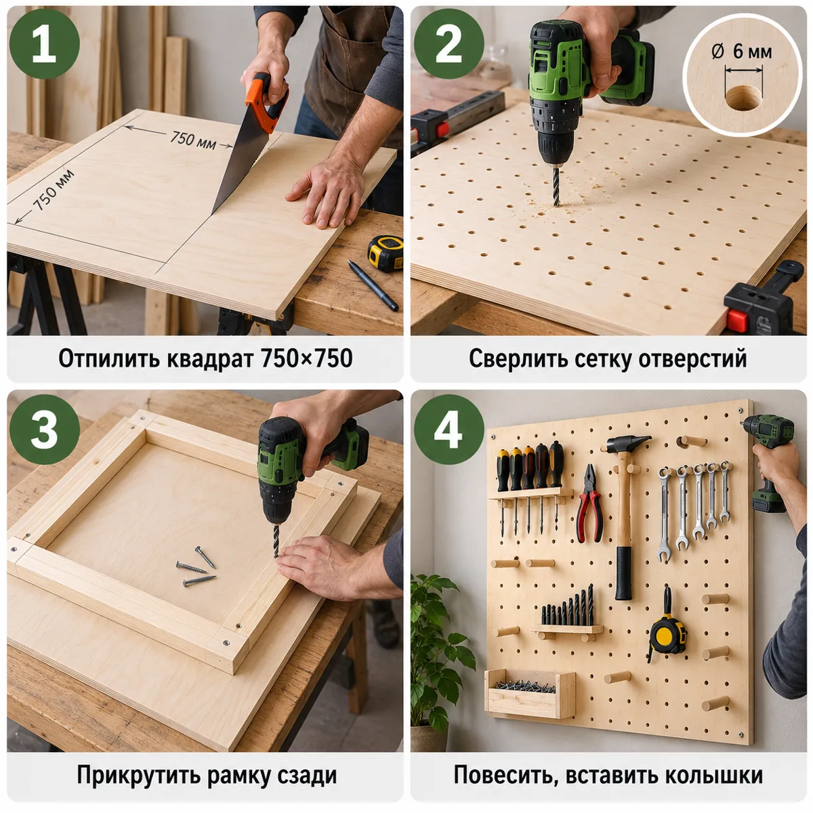
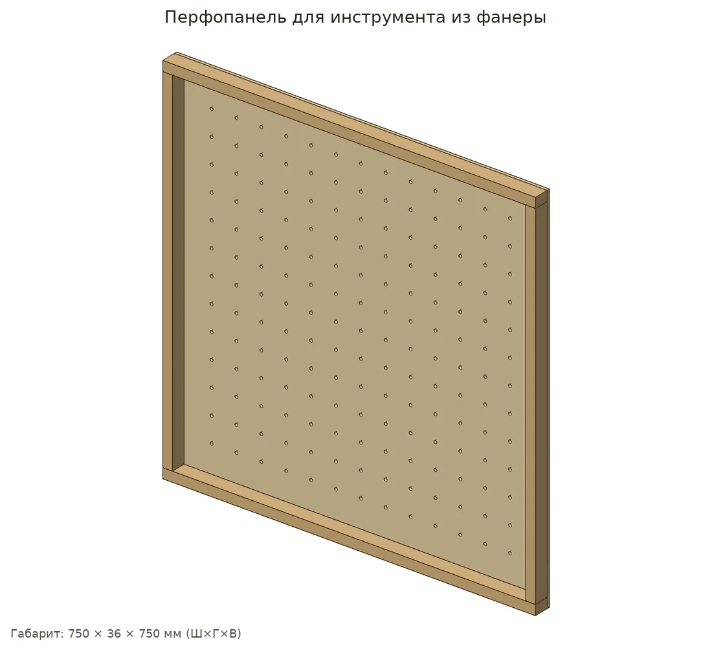
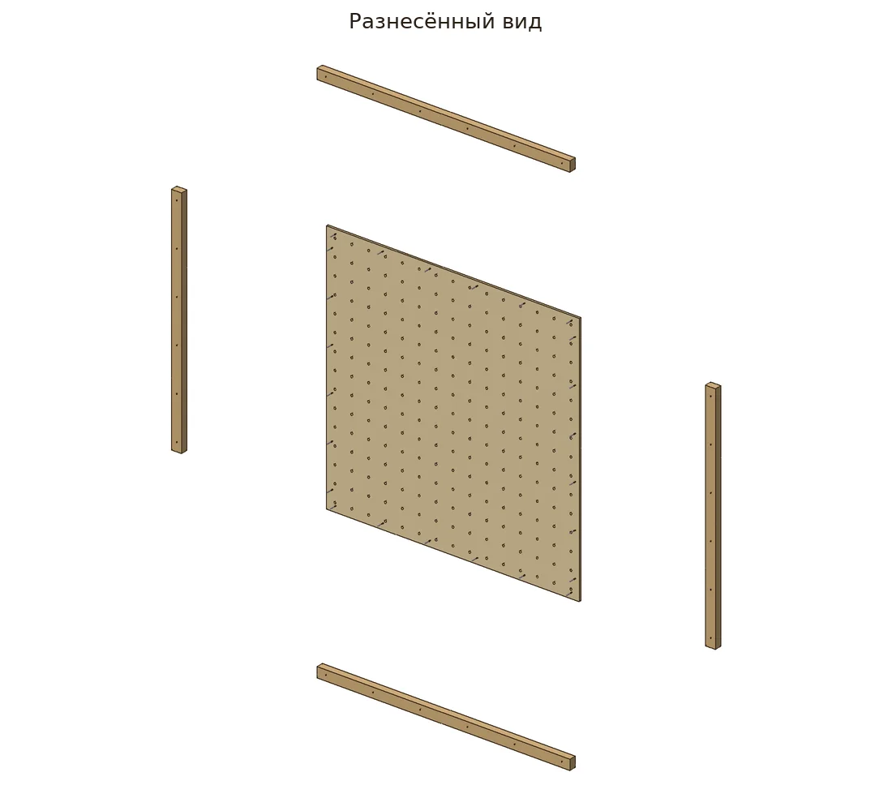
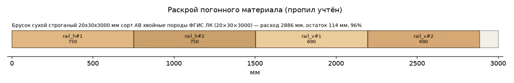
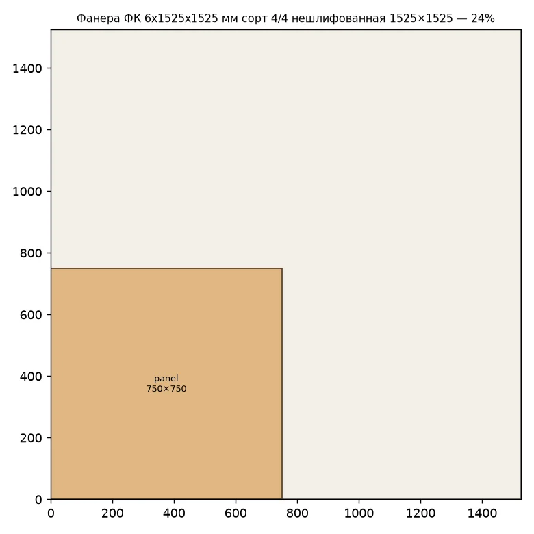
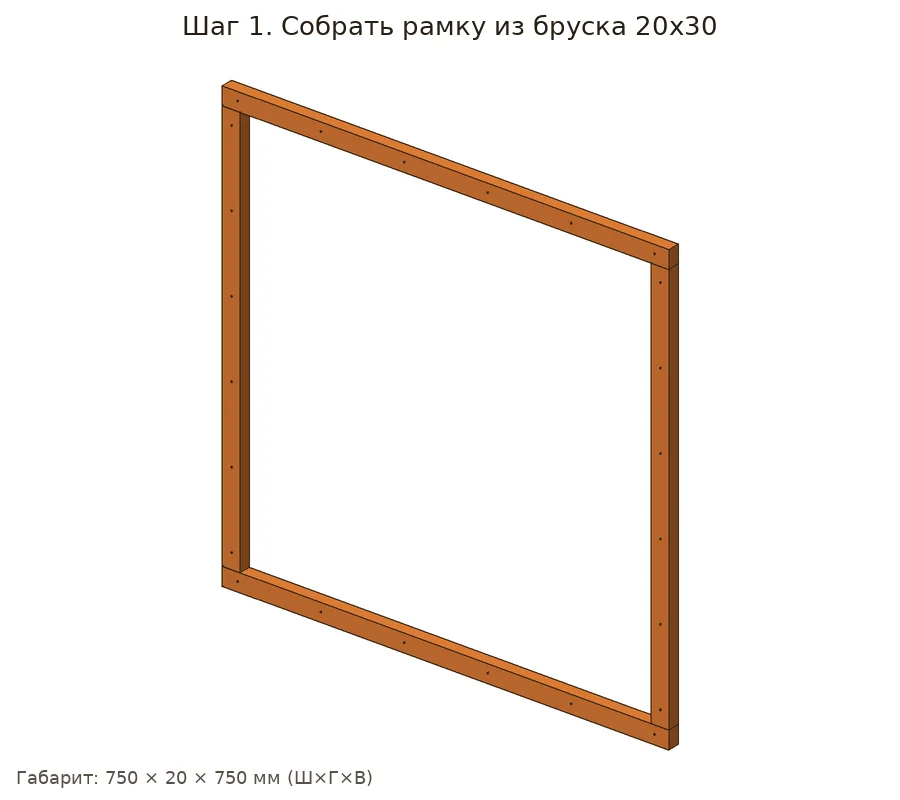
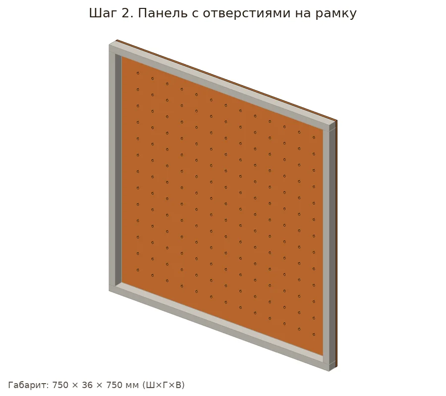

Настенная панель с сеткой отверстий 6 мм на рамке из бруска: инструмент висит на колышках, переставляется за секунду. Шуруповёрт здесь в своей стихии.


| Позиция | Зачем | Кол-во | Цена | Сумма |
|---|---|---|---|---|
| материал | ||||
| Брусок сухой строганый 20х30х3 Брусок сухой строганый 20х30х3000 мм сорт АВ хвойные породы ФГИС ЛК · арт. 101163 |
раскрой: 1 заготовка по 3000 мм | 1 шт | 93 ₽ | 93 ₽ |
| Фанера 6×1525×1525 Фанера ФК 6х1525х1525 мм сорт 4/4 нешлифованная · арт. 109060 |
раскрой листа | 1 лист | 786 ₽ | 786 ₽ |
| крепёж | ||||
| Саморезы 32 мм Саморезы ГД 32x3,5 мм (30 шт.) · арт. 125768 |
нужно 24 шт. + запас → 27; в упаковке 30 | 1 упак | 37 ₽ | 37 ₽ |
| фурнитура | ||||
| Дюбели с шурупами Дюбель универсальный Hard-Fix 6x30 мм нейлон с шурупом (40 шт.) · арт. 687547 |
4 шт. | 1 упак | 236 ₽ | 236 ₽ |
| расходник | ||||
| Шкурка P120 Наждачная бумага Flexione 230х280 мм Р120 влагостойкая · арт. 691898 |
≈4.11 листа | 5 шт | 42 ₽ | 210 ₽ |
| оснастка | ||||
| Бита PH2 Бита Hesler PH2 магнитная 25 мм (882083) · арт. 882083 |
саморезы | 1 шт | 33 ₽ | 33 ₽ |
| Сверло по дереву спиральное Vi Сверло по дереву спиральное Vira 3х60 мм с зенкером (552053) · арт. 684796 |
утопить головки | 1 шт | 176 ₽ | 176 ₽ |
| Сверло 6 мм Сверло по дереву спиральное КМ 6х90 мм (966065) · арт. 966065 |
panel | 1 шт | 65 ₽ | 65 ₽ |
| Ножовка по дереву Ножовка по дереву 400 мм 9 зуб/дюйм средний зуб · арт. 681543 |
раскрой | 1 шт | 226 ₽ | 226 ₽ |
| Стусло Стусло Сибртех пластиковое 300х65 мм (22571) · арт. 968520 |
ровные торцы 90°/45° | 1 шт | 143 ₽ | 143 ₽ |
| Рулетка Рулетка с фиксатором 3 м x 16 мм · арт. 159373 |
разметка | 1 шт | 99 ₽ | 99 ₽ |
| Карандаш Карандаш строительный малярный Hesler (2 шт.) · арт. 125418 |
разметка | 1 упак | 30 ₽ | 30 ₽ |
| Итого, включая оснастку 772 ₽ | 2134 ₽ | |||
Источник идеи: https://www.drive2.ru/c/690548278898464300/. Проект переработан под шуруповёрт 12 В и ручной инструмент.
Параметрическая 3D-модель с настоящими отверстиями, крепёж расставлен по правилам (Eurocode 5, упрощённо для DIY), раскрой с учётом пропила, закупка упаковками. Габарит модели 750×36×750 мм, масса ≈3.07 кг. Прочность не рассчитывалась.






Проверка пройдена: ошибок и предупреждений нет.
| Соединение | Крепёж | Шт. | Заход | Засверловка |
|---|---|---|---|---|
| Панель с перфорацией → Рамка (верх/низ) №1 | 3.5×32 | 6 | 26 мм | сверло 2.5 мм |
| Панель с перфорацией → Рамка (верх/низ) №2 | 3.5×32 | 6 | 26 мм | сверло 2.5 мм |
| Панель с перфорацией → Рамка (бок) №1 | 3.5×32 | 6 | 26 мм | сверло 2.5 мм |
| Панель с перфорацией → Рамка (бок) №2 | 3.5×32 | 6 | 26 мм | сверло 2.5 мм |
Брусок 20×30: 2926 мм
ply6: 0.56 м²
Саморез 3.5×32: 24 шт
Дюбель 6×30 с шурупом: 4 шт
Шкурка P120: ≈4.11 лист
Смета «Что купить в Петровиче» выше посчитана этой же моделью: упаковки, замены и оснастка.